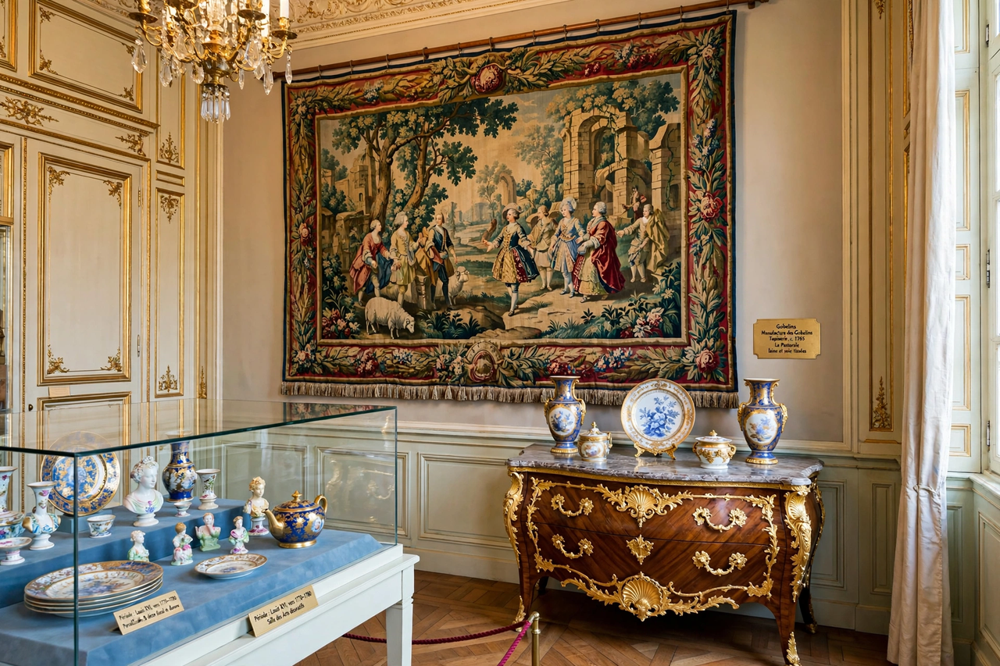

Decorative arts

The decorative arts are arts or crafts concerned with the design and manufacture of functional objects that are also beautiful — including furniture, ceramics, glassware, metalwork, textiles, jewellery and interior design. The term is usually used in contrast to the "fine arts" of painting, sculpture and architecture, a hierarchy that critics and movements such as Arts and Crafts have long contested.
History
Decorative arts have been produced in every culture, from Chinese porcelain and Islamic tilework to medieval goldsmith work and Japanese lacquerware exported to Europe. In early modern Europe, court manufactories such as Sèvres and Meissen set fashions in porcelain; the eighteenth century saw the great French ébénistes and the English cabinet-makers. The Great Exhibition of 1851 and the foundation of the South Kensington (now Victoria and Albert) Museum in London institutionalised design reform, followed by Art Nouveau, Art Deco and modernist industrial design in the twentieth century.
Study and collections
Major collections are held by the Victoria and Albert Museum, the Metropolitan Museum of Art, the Musée des Arts Décoratifs in Paris and the Cooper Hewitt in New York. Scholarship treats decorative objects as evidence for trade, technology, taste and everyday life, not merely as ornament.
See also: Arts and Crafts movement, Art Nouveau